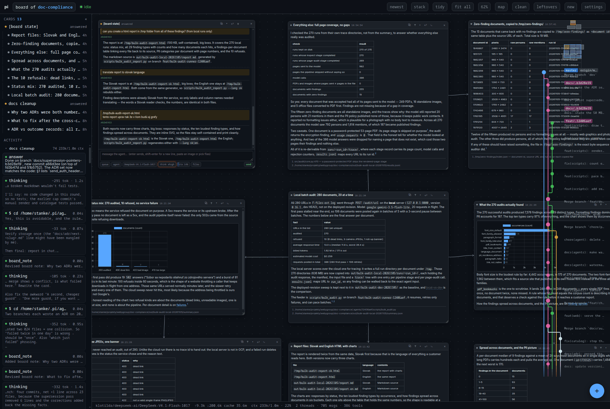

Local daemon for pi agents
Type into a card. Watch it work.
A workspace is a folder. A thread on its board is one agent; you steer it in flight, queue follow-ups, and review its work on an isolated git worktree.
- node >= 22.18
- zero runtime deps
- loopback + token
- no build step
git clone https://github.com/theMladyPan/pi-studio.git cd pi-studio node server.ts
Add --no-open for a service, or run pi-studio from bin/pi-studio once the repo's bin/ directory is on your PATH, or ./bin/pi-studio.

Three primitives
One daemon, three ideas: threads you steer, branches you can read, and a boss that hands work to children.
One card per agent
Every thread card runs its own pi --mode rpc child. Threads run in parallel, each in its own workspace or worktree, and the rail on the left lists every command, edit, and thought as it happens.
- Steer redirects a run still in flight; queue waits behind it. No killing the run to fix it.
- Cards beside a thread are structured: notes with tables and charts, source views at the line that matters, and questions with buttons to answer.
- Sessions persist under
~/.pi/agent/state/pi-studio/, so a board is resumed after a restart, not restarted.
Refactor the store
posts beside itself
Audit table and chart
Keep the old layout?
store.ts, at the line that matters
A detached worktree per thread
In a git repo, every thread starts in its own detached worktree under .agents/<id>. Before its first edit, a thread that edits cuts a named branch <type>/<slug>-<id>; a read-only or question thread stays detached and writes no branch. Threads stay out of each other’s way by construction.
- The strip on the right draws branch lanes and commit pills, so you can read what each thread changed.
- A folder that is not a repo runs in place, like scratch: no worktree or branch to cut, and nothing merges or pushes behind your back; you review, you merge.
Worktrees start detached; named branches appear on first edit, and read-only threads stay detached. Lane names are examples; the strip is drawn from the repo.
A boss that hands work out
Human threads get a mode: agent is the baseline, plan writes a plan and throwaway scripts, and boss spawns children and reports what came back. A boss runs no work itself; it fans out child threads — scout, implement, review, chore, architect — in parallel or in sequence, then integrates their committed branches back into its own, using the board's chosen strategy (merge by default, rebase optional) before reporting.
Every flow gets one bounded repair pass: a red check goes back once, and if it is still red the boss stops and tells you why, instead of looping on its own findings.
| flow | when | shape |
|---|---|---|
| simple | One file, one known behaviour, a test beside the change. | scout, implement, then the smallest check that catches a regression; red goes back once. |
| advanced | Files are known, the edges between them are not. | scout and a throwaway script in parallel, the plan waits for both, then implement, isolated and full tests, and a review of plan plus diff; one repair round. |
| complex | Too big for one plan, or too risky for one reviewer. | Two scouts in parallel, a plan the human approves, implement in slices, checks from narrow to end-to-end, review and static checks in parallel, one targeted repair, then a re-review of the assembled branch carrying the repair. |
Requirements and honest caveats
One machine, one developer. Everything below is true of the daemon today, including the parts that bite.
| needs | detail |
|---|---|
| Node.js | >= 22.18 from nodejs.org, or a version-manager build with TypeScript stripping enabled. A distribution package often compiles TypeScript support out: Ubuntu 26.04 ships 22.22, which passes the version check and then fails with ERR_UNKNOWN_FILE_EXTENSION. If pi brought its own Node, put $HOME/.local/share/pi-node/current/bin ahead on PATH. |
| pi CLI | Installed locally and on PATH on the same machine. The daemon spawns it; there is no cloud agent behind it. |
| Dependencies | Zero runtime npm dependencies: node server.ts runs the TypeScript directly, with no build step. npm install is only needed for npm run check, which uses the TypeScript dev dependency. |
| Network & security | Loopback-only (127.0.0.1) by default, gated by a persistent daemon token saved on disk (browser sessions last 30 days; restarting the daemon does not revoke a leaked link). --host 0.0.0.0 exposes plain HTTP to anyone holding the printed link, who can then ask agents to run commands on that machine: use only on a trusted network, or put a tunnel in front of it. |
| Scope | Built for a single developer on their own machine. No hosted cloud mode, no accounts. |
Keyboard shortcuts
The board is driven from the keyboard. Six worth knowing:
- tstart a new thread, on a board of threads with no card selected
- ffit every card on the screen
- njump to the next new card or waiting question
- mhide or show the small overview map
- Entersend the message
- Eschand the keyboard back to the board and keep the text
The full list lives behind the keys button in the app, drawn from the same SHORTCUTS table in public/client/board.js.